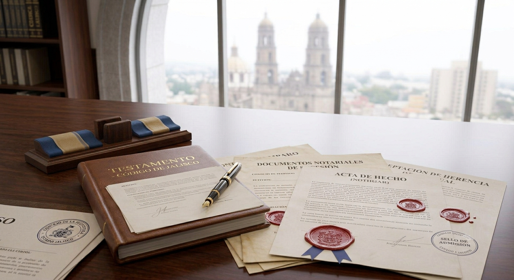

Protegemos tu patrimonio y garantizamos una transmisión legal segura
Brindamos asesoría y representación en procedimientos sucesorios testamentarios e intestamentarios, procurando una distribución del patrimonio conforme a la ley y la voluntad del autor de la herencia.
Solicitar asesoría
¿Qué es un juicio sucesorio?
El juicio sucesorio es el procedimiento legal mediante el cual se transmiten los bienes, derechos y obligaciones de una persona fallecida a sus herederos o legatarios, conforme a un testamento o, en su ausencia, de acuerdo con lo establecido por la ley.
En JS Legal & Ingeniería brindamos asesoría y representación durante todas las etapas del procedimiento sucesorio, procurando una distribución ordenada del patrimonio y la protección de los derechos de los herederos.
¿En qué podemos ayudarte?
✔ Juicio sucesorio testamentario
Tramitamos la sucesión cuando existe un testamento válido, respetando la voluntad del autor de la herencia.
✔ Juicio sucesorio intestamentario
Representamos a los herederos cuando la persona falleció sin otorgar testamento.
✔ Declaración de herederos
Gestionamos el reconocimiento legal de quienes tienen derecho a heredar.
✔ Adjudicación de bienes
Realizamos los trámites necesarios para que los bienes sean adjudicados legalmente a sus propietarios.
✔ Elaboración de testamentos
Asesoramos para planificar la distribución del patrimonio y prevenir futuros conflictos familiares.
✔ Asesoría a herederos y albaceas
Orientamos a quienes participan en el procedimiento sucesorio sobre sus derechos y obligaciones.
¿Por qué recibir asesoría en Sucesiones y Herencias?
Protección del patrimonio
Aseguramos que la transmisión de los bienes se realice conforme a la ley y a la voluntad del autor de la herencia.
Prevención de conflictos
Una adecuada asesoría jurídica ayuda a evitar controversias entre herederos y reduce riesgos durante el procedimiento.
Seguridad jurídica
Cada etapa del juicio sucesorio se desarrolla con estricto apego a la legislación vigente.
Acompañamiento profesional
Te representamos y asesoramos desde el inicio del procedimiento hasta la adjudicación de los bienes.
¿Necesitas asesoría en Sucesiones y Herencias?
Agenda una consulta y recibe orientación profesional para iniciar un juicio sucesorio, elaborar un testamento o resolver cualquier asunto relacionado con la transmisión de bienes y derechos.
Solicitar asesoría por WhatsAppPreguntas frecuentes sobre Sucesiones y Herencias
Respondemos algunas de las dudas más comunes sobre los procedimientos sucesorios.
¿Qué ocurre si una persona fallece sin dejar testamento?
En ese caso debe tramitarse un juicio sucesorio intestamentario para determinar quiénes son los herederos conforme a la ley.
¿Es obligatorio iniciar un juicio sucesorio?
Generalmente sí, cuando es necesario adjudicar bienes, inscribir inmuebles o disponer legalmente del patrimonio de la persona fallecida.
¿Quién puede iniciar un juicio sucesorio?
Los herederos, legatarios, el albacea o cualquier persona con interés jurídico, según corresponda en cada caso.
¿Qué documentos se necesitan para iniciar el trámite?
Normalmente se requiere el acta de defunción, actas del Registro Civil, identificación oficial y la documentación relacionada con los bienes. Dependiendo del caso pueden solicitarse otros documentos.
¿Cuánto tiempo tarda un juicio sucesorio?
La duración depende de la existencia o no de testamento, del número de herederos, de los bienes involucrados y de la carga de trabajo del juzgado.
¿Puedo elaborar un testamento para evitar conflictos futuros?
Sí. El testamento brinda mayor certeza jurídica y facilita la distribución del patrimonio conforme a tu voluntad.
Servicios relacionados
También podemos ayudarte en otras áreas del Derecho.
¿Por qué elegir JS Legal & Ingeniería?
Te acompañamos durante todo el procedimiento sucesorio con profesionalismo, transparencia y seguridad jurídica.
Atención personalizada
Cada sucesión requiere un análisis particular para proteger los derechos de los herederos.
Ética profesional
Actuamos con responsabilidad, confidencialidad y estricto apego a la legislación vigente.
Estrategias jurídicas
Buscamos soluciones que faciliten la distribución del patrimonio y eviten conflictos innecesarios.
Comunicación constante
Mantenemos informado al cliente durante todas las etapas del procedimiento sucesorio.